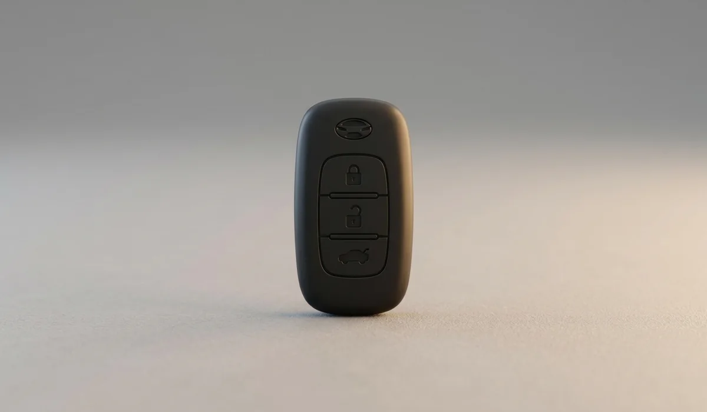
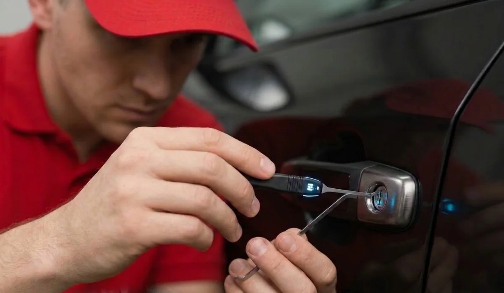
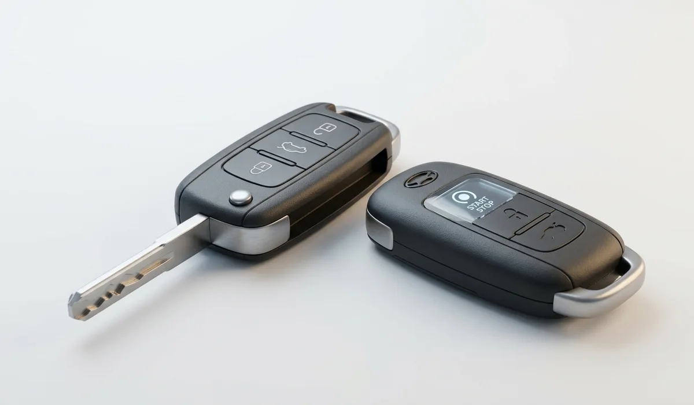

01Chaves automotivas
Substituição, duplicação e manutenção de chaves automotivas para diversos veículos.
Solicitar orçamento→Especialistas em chaves automotivas, codificadas e cópias no Rio Vermelho. Atendimento rápido, equipamento moderno e garantia no serviço.

Do imprevisto à chave reserva, conte com atendimento especializado e orientação direta.

01Substituição, duplicação e manutenção de chaves automotivas para diversos veículos.
Solicitar orçamento→ 02
02
Programação e codificação com tecnologia apropriada e compatibilidade com o sistema antifurto.
Solicitar orçamento→Cópias automotivas, residenciais e comerciais com precisão, rapidez e garantia.
Solicitar orçamento→
04Atendimento técnico para veículos e portas, priorizando a integridade do patrimônio.
Solicitar orçamento→Reparo, configuração e bateria para controles, alarmes e sistemas automotivos.
Solicitar orçamento→
06Soluções para modelos presenciais, start/stop, eletrônicos e chave canivete.
Solicitar orçamento→Selecione uma marca para abrir o carrossel de modelos disponíveis. A compatibilidade é confirmada pela equipe com modelo, ano e versão do veículo.
Além da experiência técnica, a presença física ajuda o cliente a identificar onde será atendido e reforça a confiança antes da visita.


Há mais de 25 anos em Salvador, o Chaveiro Ceasinha combina conhecimento técnico, atendimento humano e uma localização prática no Mercado do Rio Vermelho.
“Serviço bem feito e com bastante qualidade.”
“Super recomendo todos os serviços!”
Informe o tipo de chave, veículo e ano. A equipe orienta você sobre disponibilidade e orçamento.